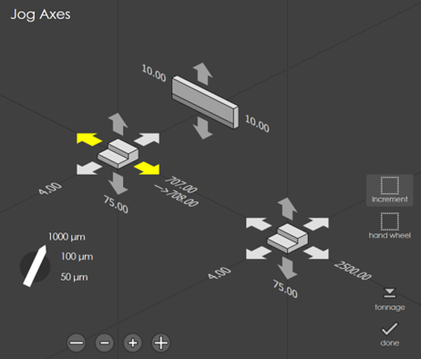
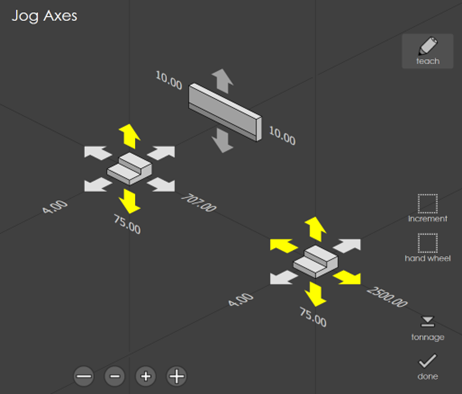
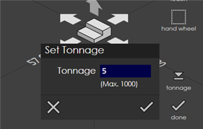

Jog Axes
Multi-Axis Jog
This panel is used to move one or more axes of the machine either in jog mode, or by using a hand-wheel. The current positions of all the axes can also be viewed using this panel.
Jogging the axes
Each back-gauge is surrounded by 6 arrows which can be used to move it in one of the 6 primary directions. When you touch one of these axes, it lights up yellow while the axis is moving.

| On some press-brakes, the Jog Axes screen can be used to only select the axes to be jogged, and separate Jog Forward and Jog Backward buttons mounted on the operator panel must be pressed to do the actual axis movement. In that case, the jog axes panel will appear a bit different from the one shown in the picture above. |
The teach button is displayed (see picture below) when the axis jog panel has been called up while creating a direct program. Touching this button records the current back-gauge positions as the positions for the bending step that you are creating.

Jog Velocity:
Use this button to jog the axis before homing. This button will appear when the axes are not homed, denoted by * before current position.
Increment:
Use this button to jog the axis in step of 50 or 100 or 1000 micron. Direct Move: Click on the current position of back gauge or ram axis to enter the target position to which the axis should move. Machine will go to stop and on pressing the start, axis will start moving to the entered position. Target position is denoted after arrow symbol. To achieve this, no other mode should be active.
Tonnage:
Use this button to set the tonnage used during ram manual moves.

The actual real-time position will also be displayed (if a real run-time is connected, capable of providing the position).